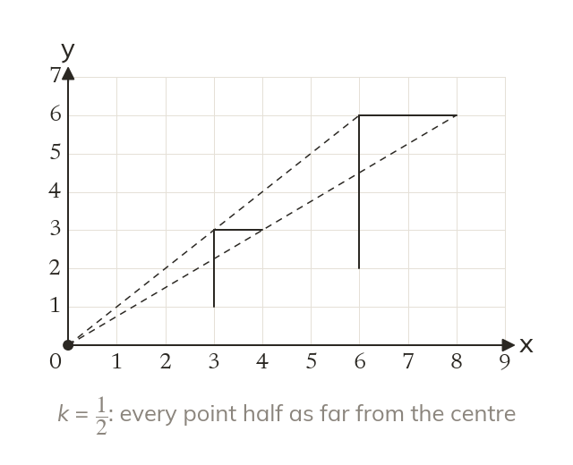
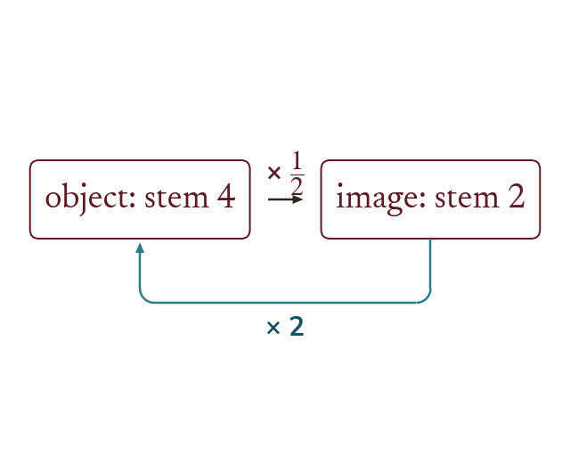
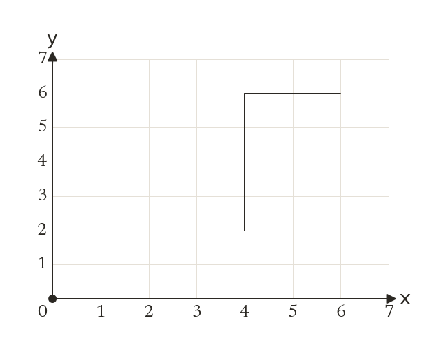
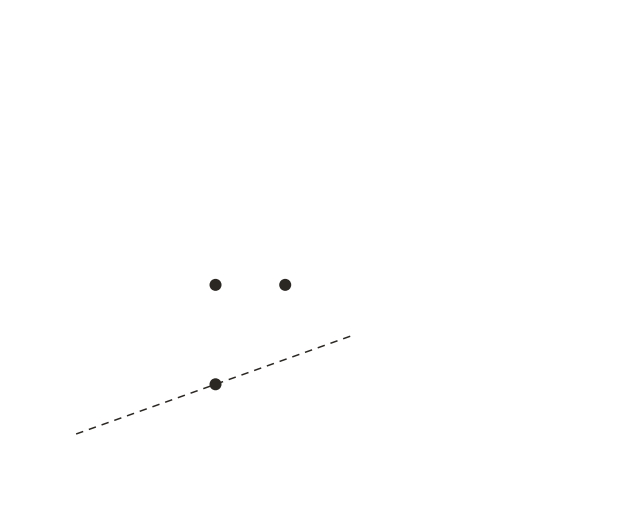
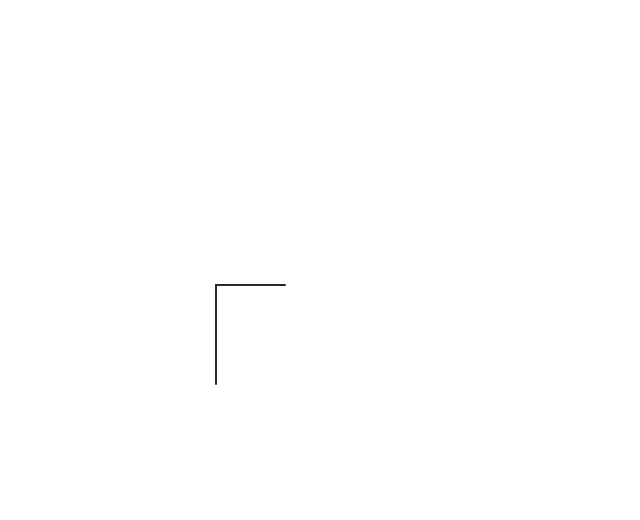
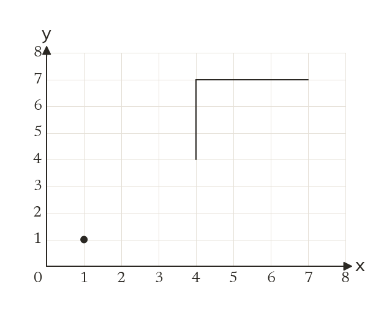
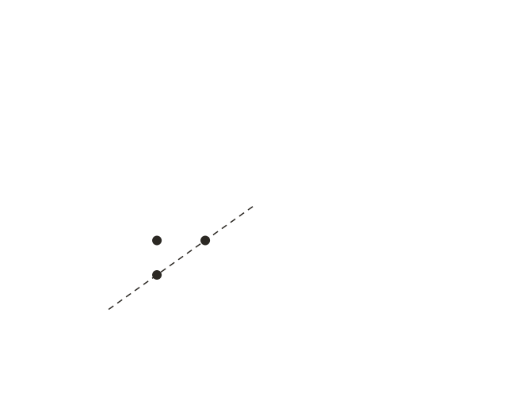
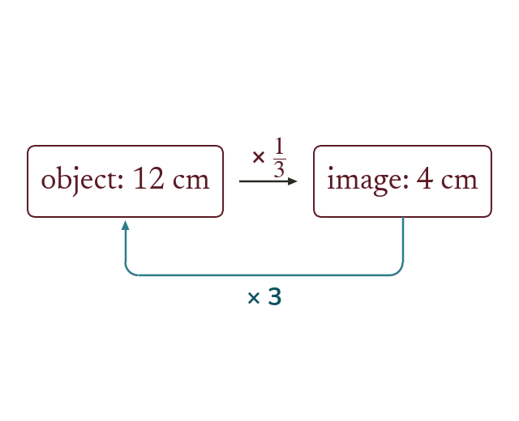

A photo shrunk to fit a passport, or a building drawn on a plan, is an enlargement too: one that makes the shape smaller. The same rule works with a fraction.
By the end you’ll know…
A scale factor between 0 and 1 produces an image smaller than the object, and it is still called an enlargement.
The rule is unchanged: each distance from the centre is multiplied by k, so k = 12halves every distance from the centre.
The image is still similar to the object, and the enlargement with scale factor 1kabout the same centre undoes it.
By the end you can
G4Enlarge a shape by a fractional scale factor about a given centre.
G5Calculate the fractional scale factor connecting an object and a smaller image, and use it to find a missing length.
Work down the page at your own pace. Write every answer in your book first, then click to check it.
01
Do Now
About 5 minutes
1
Find 23of 18 cm.
18 ÷ 3 × 2 = 12 cm
2
Two similar rectangles have scale factor 3. The larger is 12 cm long. How long is the smaller?
12 ÷ 3 = 4 cm
3
Enlarge the point (2, 3) by scale factor 2, centre (0, 0).
(4, 6)
4
Enlarge the point (3, 2) by scale factor 2, centre (1, 1).
(5, 3)
Remember these?
LAST LESSONAn enlargement with centre (0, 0) maps the point (1, 3) onto (4, 12). Find the scale factor.
4 ÷ 1 = 12 ÷ 3 = 4 Scale factor 4
LAST WEEKReflect the point (5, 2) in the line y = x.
(2, 5)
LAST TERMFind the area of a circle with radius 3 cm, to 1 decimal place.
π × 3² = 28.3 cm²
LAST YEARWork out 4.8 ÷ 0.6.
48 ÷ 6 = 8
02
Learn
Read each card, then follow the worked examples one step at a time.

A fraction makes it smaller
A scale factor between 0 and 1 gives a smaller image. It is still called an enlargement. With k = 12, every distance from the centre halves.
A scale factor between 0 and 1 gives a smaller image, and it is still called an enlargement. With k = 12, every distance from the centre is halved.

Undo it with the reciprocal
An enlargement by 12is undone by an enlargement by 2 about the same centre. The object and the image are similar either way.
WORKED EXAMPLE A
Enlarge the flag by scale factor 12, centre (0, 0).



Halveevery distance from (0, 0) is halved, so each coordinate halves
Points(4, 2) to (2, 1), (4, 6) to (2, 3), (6, 6) to (3, 3)
Checkthe stem was 4 and is now 2
WORKED EXAMPLE B
Enlarge the flag by scale factor 13, centre (1, 1).


Countthe foot is 3 right and 3 up from the centre, so its image is 1 right and 1 up, at (2, 2)
Points(4, 7) to (2, 3) and (7, 7) to (3, 3)
Checkthe stem was 3 and is now 1
YOUR TURN · a
Enlarge the point (6, 4) by scale factor 12, centre (0, 0).
(3, 2)
YOUR TURN · b
Enlarge the point (7, 5) by scale factor 12, centre (1, 1).
6 right and 4 up becomes 3 right and 2 up: (4, 3)
03
Check your understanding
Pick an answer. If it's wrong, the feedback tells you which mistake it was.
A shape is enlarged by scale factor 14. What happens to its lengths?
Yes. Times 14makes each length a quarter of what it was.
Not quite. Times 14makes it smaller, not 4 times bigger.
Not quite. A scale factor less than 1 still counts. It makes the shape smaller.
Not quite. Multiply by 14, don't take 14off.
Enlarge the point (10, 4) by scale factor 12, centre (0, 0).
Not quite. Times 12halves, it doesn't double.
Yes. Half of each: (5, 2).
Not quite. Multiply by 12, don't subtract it.
Not quite. Scale factor 12still changes it. Halve each coordinate.
Enlarge the point (5, 7) by scale factor 12, centre (1, 1).
Not quite. Measure from the centre (1, 1), not from (0, 0).
Not quite. Times 12halves, it doesn't double.
Yes. From (1, 1) it's 4 right, 6 up. Halved: 2 right, 3 up, so (3, 4).
Not quite. Scale factor 12still changes it. Halve the distance from (1, 1).
04
Practise
mark as you go
Checkpoint. Enlarge the triangle with corners (2, 2), (6, 2) and (2, 8) by scale factor 12, centre (0, 0), and write down the corners of the image.Show your teacher before you go on
Enlarge the triangle by scale factor 12, centre (0, 0). Write down the corners of the image.
Halve each coordinate: (2, 1), (4, 1) and (2, 3)
2
Enlarge the triangle by scale factor 13, centre (1, 1). Write down the corners of the image.
(2, 2), (4, 2) and (2, 3)
3
Enlarge the point (8, 12) by scale factor 14, centre (0, 0).
8 ÷ 4 = 2 and 12 ÷ 4 = 3: (2, 3)
4
Enlarge the point (9, 5) by scale factor 12, centre (3, 1).
6 right and 4 up becomes 3 right and 2 up: (6, 3)
5
A rectangle 18 cm by 12 cm is enlarged by scale factor 23. Find the sides of the image.
18 × 23 = 12 cm and 12 × 23 = 8 cm
EXT
Enlarge (7, 7) by scale factor 12, centre (1, 3). Which enlargement maps the image back?
(4, 5); back: scale factor 2, centre (1, 3)
05
Learn
Read each card, then follow the worked examples one step at a time.
Image divided by object
The scale factor is still an image length divided by its object length. When the image is smaller, the answer is a fraction below 1.

Then use the scale factor
Multiply an object length by k to find its image length. Divide an image length by k, or multiply by the reciprocal, to go back.
WORKED EXAMPLE C
A side of 10 cm is 4 cm on its enlargement. Find the scale factor.
Divide image by object.
4 ÷ 10 = 410
Simplify= 25
Scale factor25
WORKED EXAMPLE D
A photo 12 cm wide and 9 cm tall is reduced to 8 cm wide. Find its new height.
Find the scale factor8 ÷ 12 = 23
Multiply the height9 × 23 = 6 cm
YOUR TURN · c
A side of 15 cm matches a side of 5 cm on the enlargement. Find the scale factor.
5 ÷ 15 = 13
YOUR TURN · d
A poster 20 cm by 16 cm is enlarged by scale factor 34. Find its new size.
15 cm by 12 cm
06
Check your understanding
Pick an answer. If it's wrong, the feedback tells you which mistake it was.
A side of 20 cm is 4 cm on the enlargement. What is the scale factor?
Not quite. It's upside down. New ÷ old: 4 ÷ 20.
Not quite. A scale factor multiplies. Divide: 4 ÷ 20.
Yes.4 ÷ 20 = 15.
Not quite. A shape getting smaller still counts as an enlargement.
A shape is enlarged by scale factor 25. What does a side of 20 cm become?
Not quite. That's 15of 20. You need 25: 4 × 2.
Not quite. Multiply by 25, don't divide.
Yes.20 ÷ 5 × 2 = 8 cm.
Not quite. Multiply by 25, don't take 25off.
Enlarge the point (9, 3) by scale factor 13, centre (0, 0).
Not quite. Times 13means divide by 3, not times 3.
Not quite. Times 13means divide by 3, not subtract 3.
Not quite. Scale factor 13still changes it. Divide each coordinate by 3.
Yes. A third of each: (3, 1).
07
Practise
mark as you go
Checkpoint. A picture 32 cm wide and 24 cm tall is reduced so that it is 20 cm wide. Find the scale factor and the new height.Show your teacher before you go on
1
A side of 18 cm is 6 cm on its enlargement. Find the scale factor.
6 ÷ 18 = 13
2
A side of 24 cm is 15 cm on its enlargement. Find the scale factor as a fraction in its simplest form.
15 ÷ 24 = 1524 = 58
3
A photo 15 cm wide and 10 cm tall is reduced to 6 cm wide. Find the scale factor and the new height.
6 ÷ 15 = 25 Height: 10 × 25 = 4 cm
4
A triangle has sides 12 cm, 16 cm and 20 cm. It is enlarged by scale factor 34. Find the sides of the image.
12 × 34 = 9, 16 × 34 = 12, 20 × 34 = 15 9 cm, 12 cm and 15 cm
5
A building 45 m tall has a model 30 cm tall. Find the scale factor from the building to the model.
45 m = 4500 cm 30 ÷ 4500 = 1150
EXT
Shape A is enlarged by scale factor 12to B, and B by scale factor 13to C, all about the same centre. Find the scale factor from A to C, and from C to A.
A to C: 12 × 13 = 16 C to A: 6
08
Exit ticket
On paper, on your own, then check
1
Does an enlargement by scale factor 13make a shape bigger or smaller?
Smaller: every length is a third as long.
2
Enlarge the point (6, 9) by scale factor 13, centre (0, 0).
(2, 3)
3
A side of 25 cm is 10 cm on the enlargement. Find the scale factor.
10 ÷ 25 = 25
Finished? Next lesson: 10.14.6 Symmetry in Two Dimensions.
Practise more
After the lesson, or whenever you want more
Dr Frost
Log in, then search for a code to practise that skill.
297aEnlarge/dilate a shape by a unit fraction scale factor.
291cDetermine the scale factor between two similar shapes.
292aDetermine unknown lengths given two separate similar shapes.